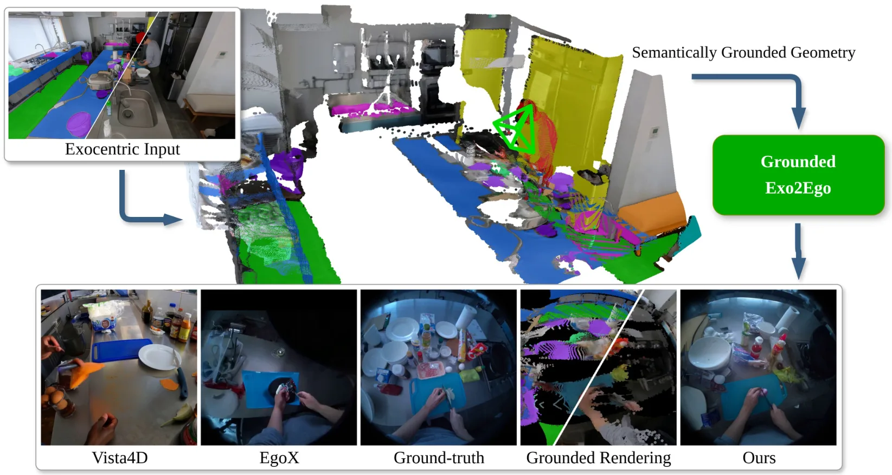
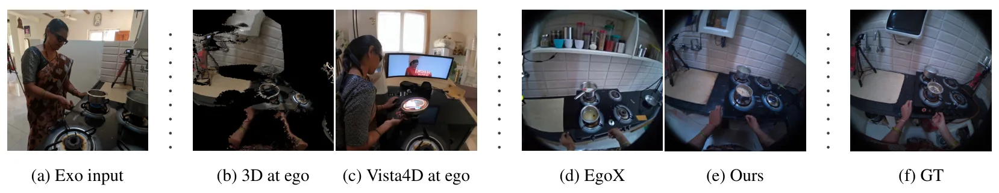
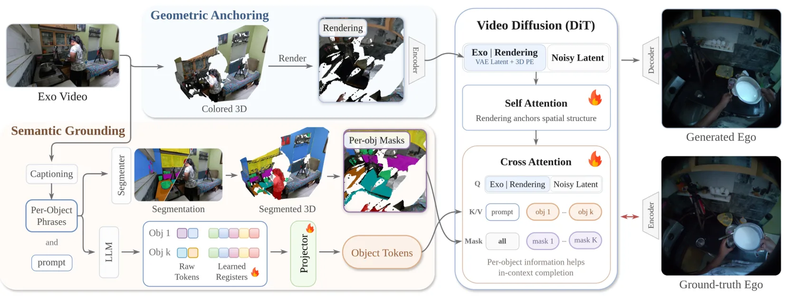
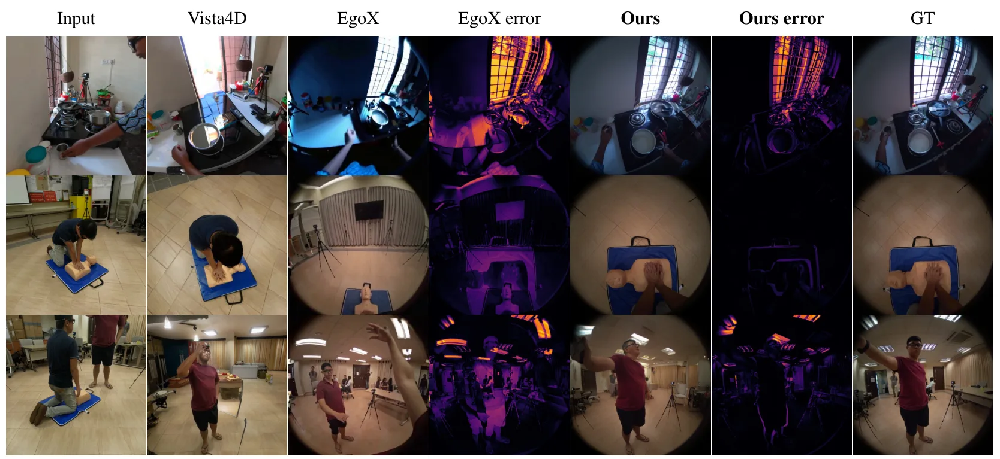
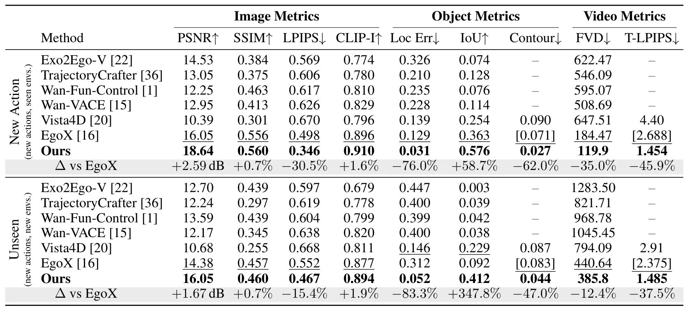

Grounded-Exo2Ego：面向稳健外视角到第一视角视频生成的结构化语义对齐Grounded-Exo2Ego: Structured Semantic Grounding for Robust Exocentric-to-Egocentric Video Generation
核心任务是视频生成，但明确使用 3D reconstruction 和 camera re-localization 处理极端视角变化，具有交叉参考价值。
一句话工作总结
将三维重建渲染作为视频生成的几何条件，并强调相机重定位误差；对关注重建—生成耦合、相机标定和视角变换的研究有跟踪价值。
摘要
针对单个外视角视频生成第一视角视频在大视角变化和不可观测区域下的困难，方法使用双分支视频扩散模型：几何锚定分支以三维重建渲染为条件，语义分支根据对象级上下文补足缺失区域；同时提出相机重定位算法处理相机与重建不对齐，并构建自动合成数据引擎。
Generating egocentric video from a single exocentric video is an emerging and important topic for AR/VR and physical AI. Compared with conventional novel view synthesis, exo-to-ego generation is a significantly harder task because the standard geometric conditioning becomes highly unreliable under extreme view changes and large unobservable regions. We present Grounded-Exo2Ego, a principled framework that addresses these challenges at both the architectural and data levels. Architecturally, Grounded-Exo2Ego is a dual-branch video diffusion model that couples a geometric anchoring branch, which conditions the generation on the rendering of a 3D reconstruction, with a novel semantic grounding branch, which goes beyond the prevailing geometry-based approach and improves quality by synthesizing challenging regions based on object-level context. Additionally, we found that the overlooked issue of camera-reconstruction misalignment severely undermines exo-to-ego learning. We thus introduce a camera re-localization algorithm that resolves this issue and substantially improves quality across all metrics. We further develop a fully automated synthetic data engine that generates and renders rigged 3D characters in procedurally generated environments. Evaluation on the challenging EgoExo4D dataset shows that our method outperforms recent state-of-the-art approaches by large margins across all metrics. Detailed ablations validate improvements from each of our contributions at both the data and architectural level.
中文解读摘录
- 中文名：TopoSurfel：连接高斯曲面元与网格的闭环表面重建
- 方向：3DGS、表面重建、网格、可微几何；代码链接见论文页。
- 要点：以不可训练的可微等值面提取构造连续代理网格，再用网格引导曲面元演化，结合法线对齐和几何感知密度控制抑制漂浮点、填补孔洞，并以空间感知混合重初始化增强大场景稳定性。
- 判断：今日与三维重建主线最直接相关，值得优先阅读其网格提取、优化稳定性和复杂场景实验。
图表/页面预览
{kind=link}

{kind=link}

{kind=link}

{kind=link}

{kind=link}
